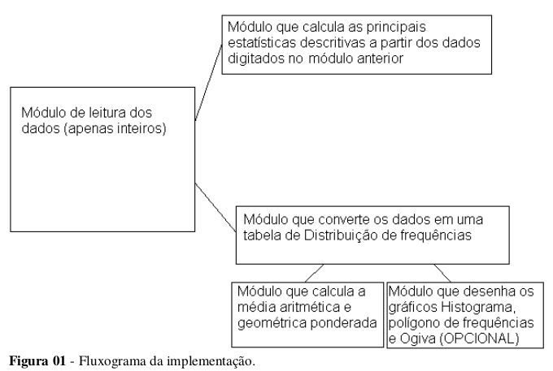

O trabalho consiste na implementação de um programa estatístico básico
Aproximadamente, o fluxograma do programa está apresentado na Figura 1.

O módulo de leitura (primeiro) deve ler indefinidos números inteiros (PODE LER TAMBÉM
NÚMEROS COM DECIMAIS, MAS VAI DIFICULTAR A PROGRAMAÇÃO (DEPENDE DE
VOCÊS)). A partir desses valores o programa terá dois módulos principais.
O primeiro módulo, que
trabalhará com os dados digitados, calculará e apresentará com uma casa decimal as seguintes
estatísticas: médias aritméticas e geométricas, moda, mediana, desvio padrão amostral e populacional,
variância amostral e populacional e coeficiente de variação amostral.
O segundo módulo deverá
converter os valores digitados em uma tabela de distribuição de Frequências completa (Conforme
apostila). A partir da tabela o programa deverá calcular (novo módulo) as médias aritmética e
geométrica.
Poderá ainda ter um módulo (Não obrigatório) que desenhará a partir da tabela pelo menos
um dos três gráficos: histograma, polígono de frequências (valerá bônus extra sobre uma nota de prova
(até 0,5 pontos)
É ISSO AÍ, PESSOAL. BOM TRABALHO.
PROF. CLAODOMIR